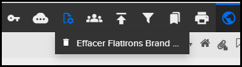

Non applicable pour Pinpoint Standalone Light.
Vous pouvez supprimer des publications importées directement dans
Pinpoint, Pinpoint Standalone et Pinpoint Server Light. La publication doit être
dans un état publié. Cette fonctionnalité s'applique à ces types de
publications :
- Publications rendues à partir de Pinpoint Neutral Packages
- Fichiers PDF uniques
Remarque : La fonctionnalité de suppression ne s'applique pas aux publications
importées via Data Manager. Si vous sélectionnez une publication importée dans Data
Manager ce message s'affiche : "Cette publication a été importée du Data Manager
Veuillez la supprimer du Data Manager."
Remarque : Vous devez disposer de
l'autorisation de lecture pour le privilège Can import and delete data
packages. Vous devez également disposer d'un accès en lecture pour la
publication que vous souhaitez supprimer. Reportez-vous au Flatirons Access
Control Manager User Guide pour obtenir des informations sur les
autorisations.
Pour supprimer un package de données, procédez comme
suit :-
Cliquez sur l'icône
 Opérations de publication dans la Barre
d’action.
L'option de suppression des opérations de publication apparaît par exemple:
Opérations de publication dans la Barre
d’action.
L'option de suppression des opérations de publication apparaît par exemple: